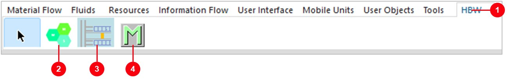
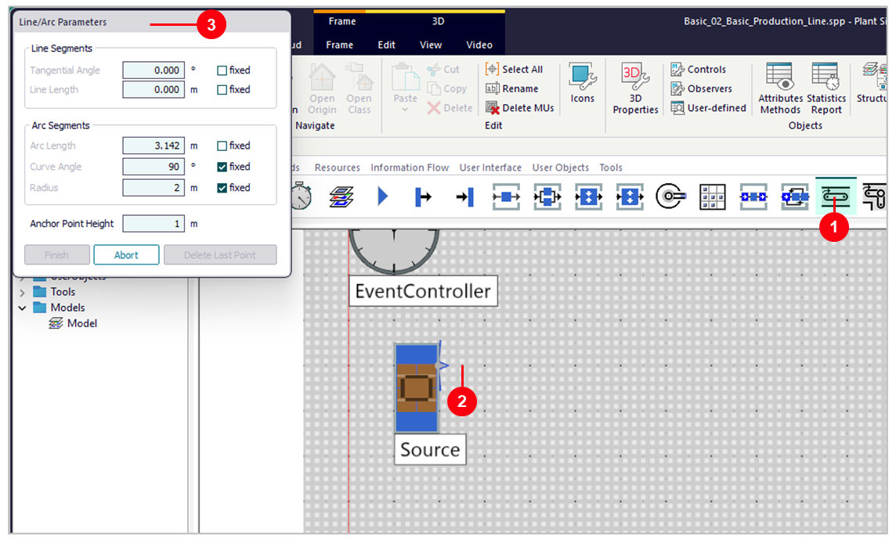
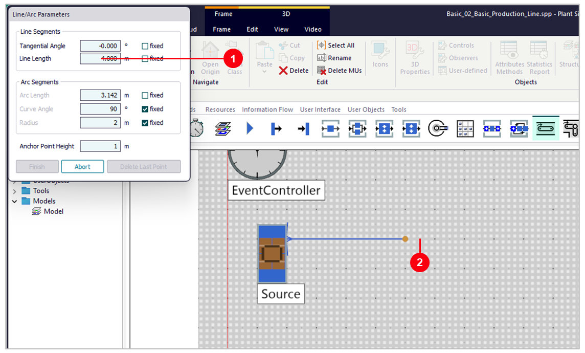
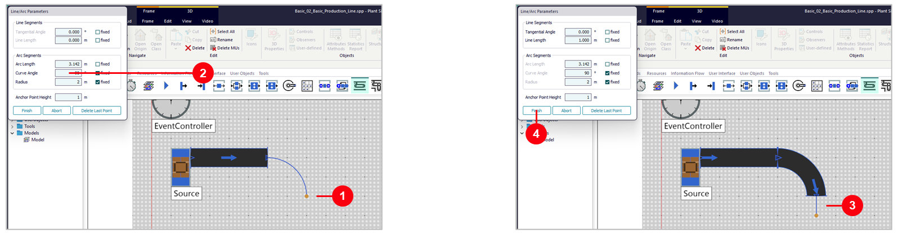
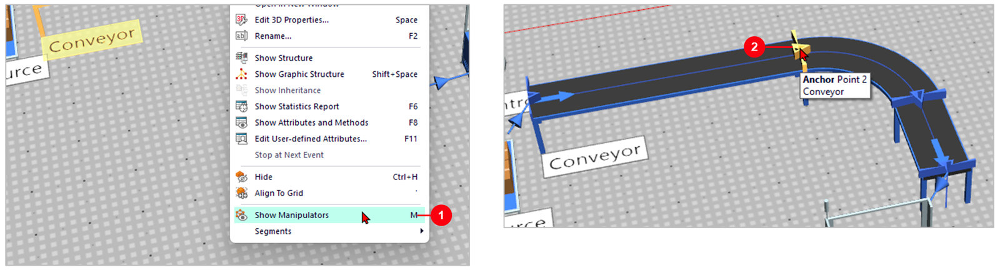
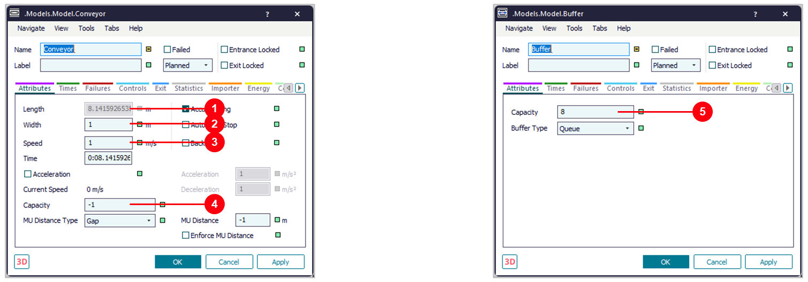
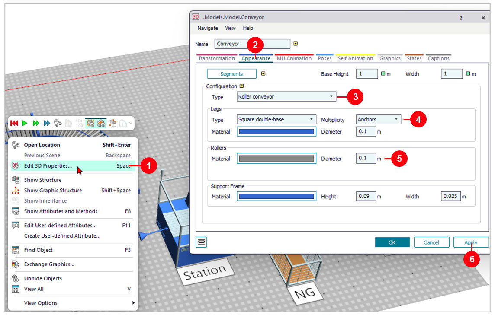
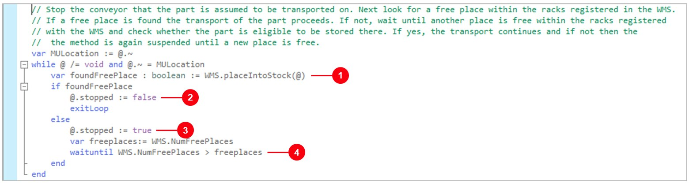

2.2 สร้างคลังสินค้าแรก
2. สินค้าคงคลังและแบบจำลองเสมือนจริงด้วย Plant Simulation · ภาคปฏิบัติ
วัตถุประสงค์การเรียนรู้
- เพิ่ม Library HBW และหา Object ของคลังอัตโนมัติ (RackLane, WMS, userSetTarget) ใน Toolbox ได้
- วาด Conveyor ทั้งช่วงตรงและโค้ง แก้รูปทรง และตั้งความเร็วได้
- วางและต่อ Source → Conveyor → RackLane → Drain แล้วตั้งค่า RackLane และ WMS ได้
- รัน 8 ชั่วโมง อ่านสถิติของ RSU และบอกได้ว่าอะไรเป็นคอขวดของคลัง
- แก้ปัญหาที่พบบ่อยของคลังอัตโนมัติ: ชิ้นงานไม่ถูกเก็บ (userSetTarget) ชั้นเต็มเมื่อเร่ง RSU และโมเดลหยุดเมื่อไม่มีการนำออก
สร้างคลังสินค้าอัตโนมัติแห่งแรกด้วย Library HBW (High Bay Warehouse) ที่มากับ Plant Simulation: ชิ้นงานวิ่งบนสายพานเข้าชั้นวาง รถยก RSU (Rack Serving Unit) เก็บเข้าช่อง แล้ว WMS สั่งนำของออก — ต่อจากการวาง Object และต่อ Connector ในบท 1.3
HBW_Lesson.spp Frame H01_ClassLibrary
(หรือสร้างใหม่ทั้งหมดตามขั้นตอน) · ผลรัน 8 ชั่วโมง: ชิ้นงานเข้าคลัง 1,461 ชิ้นภาพรวม: สร้างคลังอัตโนมัติใน 7 ขั้น
| ขั้น | ทำอะไร |
|---|---|
| 1 | เพิ่ม Library HBW |
| 2 | หา Object ของ HBW ใน Toolbox |
| 3 | วาด Conveyor |
| 4 | วาง Object และต่อ Connector |
| 5 | ตั้งค่า RackLane |
| 6 | ตั้งค่า WMS |
| 7 | รัน 8 ชั่วโมง แล้วอ่านผล |
| H02 | แบบฝึก: ชิ้นงานไม่ถูกเก็บ — สร้าง sensor เรียก userSetTarget |
| H03 | แบบฝึก: เร่ง RSU เป็น 2 m/s — คอขวดย้ายไปที่การนำออก |
| H04 | แบบฝึก: ปิดการนำออก — คลังเต็มแล้วโมเดลหยุด |
โมเดลของบทนี้: Source ปล่อยชิ้นงานทุก 10 วินาที → Conveyor → RackLane → Drain · WMS เก็บแบบ One by one และนำของออกทุก 20 วินาที
ขั้นที่ 1: เพิ่ม Library HBW
- 1แท็บ Home คลิก Manage Class Library
- 2คลิกแท็บ Libraries
- 3ใต้ Free of Charge Example Libraries คลิกช่องหน้า HBW ให้ขึ้นเครื่องหมายถูก ☑
- 4คลิก OK — แท็บ HBW จะขึ้นใน Toolbox
ขั้นที่ 2: Object ของ HBW ใน Toolbox

- 1Toolbox แท็บ HBW
- 2WMS — ตัวจัดการคลัง: เลือกช่องเก็บ และนำของออก
- 3RackLane — ชั้นวาง 2 ด้าน + รถยก RSU + สายพานเข้า–ออก ในตัว
- 4userSetTarget — Method ที่ sensor บน Conveyor เรียก เพื่อจองช่องในคลัง
ApplicationObjects › HBW3D · คู่มืออยู่ที่ HBW_Documentation
· ลากไอคอนจาก Toolbox ลงใน Frame และชี้เมาส์ค้างไว้จะขึ้นชื่อ Objectขั้นที่ 3: วาด Conveyor
สายพานในคลังของบทนี้เป็นช่วงตรงยาว 4 m — หัวข้อนี้สอนวิธีวาดทั้งช่วงตรงและโค้ง แก้รูปทรง และตั้งค่า (ภาพในหัวข้อนี้มาจาก Plant Simulation 2606 ขั้นตอนเหมือนกันใน 2504)
3.1 เลือก Conveyor แล้วคลิกจุดเริ่ม
Toolbox › Material Flow › Conveyor

- 1Conveyor — คลิกไอคอนใน Toolbox แท็บ Material Flow
- 2คลิกจุดเริ่ม — ข้าง Source ตรงที่สายพานจะรับงาน
- 3Line/Arc Parameters — หน้าต่างนี้ขึ้นมาเอง บอกความยาวระหว่างวาด
Abort ถ้าวาดผิด3.2 คลิกจุดถัดไป ดูความยาวในช่อง Line Length
เลื่อนเมาส์ไปตามทิศที่ต้องการ ดูตัวเลขเมตร แล้วคลิก — ไม่ต้องพิมพ์ตัวเลข

- 1Line Length = 4.000 m — ตัวเลขเปลี่ยนตามเมาส์ทันที
- 2คลิกจุดที่จะวาง — เมื่อตัวเลขได้ความยาวที่ต้องการ (สายพานของคลังในบทนี้ = 4 m แล้วคลิก Finish ได้เลย)
3.3 กด Ctrl ค้างแล้วคลิก ได้ทางโค้ง แล้วคลิก Finish
Ctrl + คลิก = โค้ง 90° · คลิก = ตรง · Finish = จบ

- 1กด Ctrl ค้าง แล้วคลิก — ได้ทางโค้ง 90° รัศมี 2 m
- 2Curve Angle 90, Radius 2 — ช่องหน้า fixed มีเครื่องหมายถูก ☑ = ใช้ค่านี้ทุกโค้ง
- 3ปล่อย Ctrl แล้วคลิก — สายพานตรงต่ออีก 1 m
- 4Finish — จบการวาด ได้ Conveyor ยาว 4 + 3.14 + 1 = 8.14 m
3.4 แก้รูปทรงสายพานหลังวาด
คลิกขวาที่ Conveyor › Show Manipulators (M) แล้วลากจุด Anchor

- 1คลิกขวาที่ Conveyor › Show Manipulators — หรือคลิกเลือกแล้วกด
M - 2Anchor Point — จุดหักของสายพาน (สีเหลือง) คลิกค้างแล้วลากไปวางที่ใหม่ ช่วงตรงและโค้งยืด / หดตาม
3.5 เมนู Segments — แก้เป็นตัวเลข ต่อ กลับทิศ แยก
- 1Segments — ชี้ที่เมนูนี้ เมนูย่อยจะเปิดทางขวา
- 2Edit... (F7) — ตาราง Segments ของทุกช่วง แก้ Length (m), มุมโค้ง และรัศมีเป็นตัวเลข แล้วคลิก OK
- 3Append... — ต่อสายพานจากปลายเดิม คลิกจุดถัดไปเหมือนตอนวาด
- 4Reverse — กลับทิศทางการไหล จุดสุดท้ายกลายเป็นจุดแรก
- 5Split Up — แยกสายพานเป็นคนละชิ้น ตรงจุดที่คลิกเลือก
Edit... › แถวช่วงนั้น › Length = 5 › OK ช่วงที่ตามมาเลื่อนไปเอง3.6 ตั้งค่า Conveyor
ดับเบิลคลิก Conveyor (ภาพซ้าย · ภาพขวาเป็นหน้าต่างของ Buffer ใช้ในบทอื่น)

- 1Length — มาจากที่วาด แก้ในช่องนี้ไม่ได้ (แก้ด้วย Segments)
- 2Width 1 m — ความกว้างสายพาน
- 3Speed 1 m/s — ความเร็ว (สายพานของคลังในบทนี้ 1 m/s)
- 4Capacity -1 — รับได้เต็มความยาวสายพาน
- 5(ภาพขวา) Buffer Capacity — ไม่ใช้ในบทนี้
3.7 เปลี่ยนรูปสายพานใน 3D เป็นแบบ Roller (ถ้าต้องการ)
คลิกขวาที่ Conveyor › Edit 3D Properties... › แท็บ Appearance

- 1Edit 3D Properties... — หรือคลิกเลือกแล้วกด
Space - 2แท็บ Appearance
- 3Type = Roller conveyor — เลือกรูปแบบสายพานจากรายการ
- 4Legs — ขาตั้ง: รูปแบบ สี และขนาด
- 5Rollers · Support Frame — สีและขนาดลูกกลิ้ง และโครงข้าง
- 6Apply แล้ว OK
ขั้นที่ 4: วาง Object และต่อ Connector
- 1Source — สร้างชิ้นงาน (Part) ทุก 10 วินาที
- 2Conveyor — สายพาน 4 m พาชิ้นงานเข้าคลัง (วาดตามขั้นที่ 3)
- 3RackLane — 10 คอลัมน์ × 5 ชั้น × 2 ด้าน = 100 ช่อง
- 4Drain — รับชิ้นงานที่นำออกจากคลัง
- 5WMS — วางใน Frame ไม่ต้องต่อ Connector
- 6userSetTarget — sensor บน Conveyor เรียกใช้เพื่อจองช่อง
ขั้นที่ 5: ตั้งค่า RackLane
ดับเบิลคลิก RackLane
- 1Number of columns 10, Number of rows 5 — ต่อด้าน (2 ด้าน = 100 ช่อง)
- 2Dimension of a storage place — ขนาดช่อง 0.9 × 1.2 × 1.3 m
- 3Warehouse management system = WMS — ชื่อ WMS ที่คุมชั้นนี้
- 4แท็บ Rack Serving Unit: Speed of RSU 1 m/s
- 5Availability / MTTR — การเสียของ RSU (100 % = ไม่เสีย)
ขั้นที่ 6: ตั้งค่า WMS
ดับเบิลคลิก WMS
- 1Storing strategy = One by one — เก็บเรียงช่อง (กลยุทธ์อื่นอยู่ในบท 2.7)
- 2แท็บ Stock Removal: คลิกช่อง Automatic stock removal ให้ขึ้นเครื่องหมายถูก ☑
- 3Removing starts after = 5:00 — เริ่มนำออกหลัง 5 นาที
- 4Interval between removing = 20 — นำออกทุก 20 วินาที
- 5Maximum Stock Removed = 1 — ครั้งละ 1 ชิ้น
ขั้นที่ 7: รัน 8 ชั่วโมง แล้วอ่านสถิติ RSU
EventController: Reset แล้ว Start (End = 8:00:00) · จบแล้วดับเบิลคลิก RackLane › แท็บ Statistics
- 1ตอนจบมีของ 32 ช่อง จาก 100
- 2ชิ้นงานต่อคิวบนสายพาน รอเข้าคลัง
- 3Unloading 44.97 % — RSU ใช้เวลาเก็บของเข้าช่องมากที่สุด
- 4Waiting 0.19 % — RSU แทบไม่เคยว่าง = คอขวด
ผลลัพธ์: RSU เป็นคอขวดของคลัง
| ค่าที่อ่าน | ผล (8 ชม.) | ความหมาย |
|---|---|---|
| ชิ้นงานเข้าคลัง | 1,461 ชิ้น | Source ปล่อยได้ 2,880 ชิ้นถ้าไม่ติด (8 ชม. ÷ 10 วินาที) |
| ชิ้นงานออก Drain | 1,425 ชิ้น | นำออกทุก 20 วินาที หลังนาทีที่ 5 |
| ช่องที่มีของตอนจบ | 32 / 100 ช่อง | Rack Space Utilization 32 % (WMS) |
| RSU รอ (Waiting) | 0.19 % ของเวลา | แทบไม่ว่าง = คอขวด |
แบบฝึก H02: ชิ้นงานไม่ถูกเก็บเข้าคลัง (userSetTarget)
Frame H02_userSetTarget = คลังของ H01 ที่ลบ sensor บน Conveyor ออก บันทึกไว้ในสถานะที่มีปัญหา ให้หาสาเหตุและแก้เอง
1. รัน 8 ชั่วโมง ชั้นวางยังว่าง
- 1ชั้นวางไม่มีของเลย (0 ช่อง)
- 2ชิ้นงานวิ่งผ่าน RackLane ตรงไป
- 3Drain ได้ 2,880 ชิ้น เท่ากับที่ Source ปล่อยทั้งหมด
2. เทียบ Sensors ของ Conveyor
ดับเบิลคลิก Conveyor › แท็บ Controls (ซ้าย = Frame H01 · ขวา = Frame H02)
- 1ดับเบิลคลิก Conveyor แท็บ Controls
- 2H01: Sensors (1)
- 3H02: Sensors (0) ไม่มี sensor
userSetTarget ชิ้นงานจึงไม่ได้จองช่องในคลัง3. userSetTarget ทำอะไร

- 1
WMS.placeIntoStock(@)— ขอให้ WMS หาช่องว่างและจองให้ชิ้นงาน - 2ได้ช่อง →
@.stopped := falseชิ้นงานวิ่งต่อเข้าคลัง - 3คลังเต็ม →
@.stopped := trueหยุดชิ้นงานบนสายพาน - 4
waituntil— รอจนมีช่องว่างเพิ่ม แล้วถามใหม่
4. สร้าง sensor ที่ 2 m เรียก userSetTarget
- 1คลิก Sensors (0) แล้วคลิก New...
- 2Position: Length 2 m
- 3คลิกช่อง Front ให้ขึ้นเครื่องหมายถูก ☑
- 4Control: คลิกปุ่ม ... แล้วเลือก userSetTarget
- 5คลิก OK — รายการใน Sensor List จะเป็นแบบภาพซ้าย
Create Sensor5. รันใหม่ แล้วเทียบผล (8 ชม.)
| ค่า | ไม่มี sensor | มี sensor |
|---|---|---|
| ชิ้นงานเข้าคลัง | 0 | 1,461 |
| ชิ้นงานออก Drain | 2,880 (ทั้งหมด) | 1,425 (WMS นำออก) |
| ช่องที่มีของตอนจบ | 0 / 100 | 32 / 100 |
มี sensor แล้วผลเท่ากับ H01
แบบฝึก H03: เร่ง RSU เป็น 2 m/s
Frame H03_RacksAndRSU = H01 ที่ตั้ง Speed of RSU = 2 m/s ค่าอื่นเหมือนเดิม (นำออกทุก 20 วินาที)
— คำถามนำ: ถ้า RSU เป็นคอขวด เร่ง RSU แล้วของออกจากคลังจะเพิ่มไหม?
1. ตั้ง Speed of RSU = 2 m/s
- 1ดับเบิลคลิก RackLane แท็บ Rack Serving Unit
- 2Speed of RSU 1 → 2 m/s แล้วคลิก OK
RackLane.RSU_speed · Speed of load handler คือความเร็วงายก บทนี้แก้เฉพาะ Speed of RSU2. รัน 8 ชั่วโมง ชั้นเต็ม 100 ช่อง
- 1ทุกช่องมีของ (100 / 100)
- 2ชิ้นงานต่อคิวบนสายพาน รอช่องว่าง
- 3WMS แท็บ Statistics: Rack Space Utilization 100 %
RSU เก็บของได้เร็วขึ้น แต่ WMS ยังนำออกทุก 20 วินาทีเท่าเดิม ของจึงสะสมจนเต็ม
3. เทียบสถิติ RSU กับ H01
- 1H01 (1 m/s): Waiting 0.19 % — RSU ไม่เคยว่าง
- 2H03 (2 m/s): Waiting 17.36 % — RSU มีเวลาว่าง
4. เทียบความเร็ว RSU และจำนวนคอลัมน์ (8 ชม.)
| ค่าที่ลอง | เข้าคลัง | ออก Drain | ช่องที่มีของ |
|---|---|---|---|
| RSU 0.5 m/s | 1,437 | 1,419 | 14 / 100 |
| RSU 1 m/s (H01) | 1,461 | 1,425 | 32 / 100 |
| RSU 2 m/s (H03) | 1,530 | 1,425 | 100 / 100 (เต็ม) |
| RSU 1 m/s, 20 คอลัมน์ | 1,461 | 1,425 | 32 / 200 |
ของออกเท่าเดิมทุกแบบ เพราะ WMS นำออกทุก 20 วินาที · เพิ่มคอลัมน์ไม่ช่วย เพราะ RSU คันเดียวยังวิ่งเท่าเดิม (20 คอลัมน์ตั้งที่แท็บ Racks › Number of columns)
แบบฝึก H04: ปิดการนำออก คลังเต็มแล้วโมเดลหยุด
Frame H04_WarehouseFull = H01 ที่ไม่ได้เลือก Automatic stock removal ค่าอื่นเหมือนเดิม
— คำถามนำ: ถ้าไม่มีใครเอาของออก คลัง 100 ช่องจะเต็มเมื่อไร แล้วโมเดลจะทำอย่างไร?
1. ปิด Automatic stock removal
- 1ดับเบิลคลิก WMS แท็บ Stock Removal แล้วคลิกช่อง Automatic stock removal ให้เครื่องหมายถูกหายไป ☐
- 2ช่องตั้งเวลาด้านล่างจะเป็นสีเทา ใช้ไม่ได้
WMS.activateAutoRemove := false — WMS จะไม่เอาของออกเองเลย
ของออกได้ทางเดียวคือสั่งด้วย Method (บท 2.3)2. รัน แล้วโมเดลหยุดที่ 22:47
- 1ชั้นเต็ม 100 / 100 ช่อง
- 2สายพานเต็ม Source ปล่อยชิ้นงานต่อไม่ได้
- 3เวลาหยุดที่ 22:46.56 ไม่ถึง 8 ชั่วโมง
3. ทำไมโมเดลหยุด
| ค่าที่อ่าน | ผล | ความหมาย |
|---|---|---|
| Source ปล่อยชิ้นงาน | 105 ชิ้น | 100 ในชั้น + 5 บนสายพาน |
| ช่องว่างใน WMS | 0 ช่อง | ไม่มีที่เก็บ userSetTarget หยุดชิ้นงาน |
| ชิ้นงานออก Drain | 0 ชิ้น | ไม่มีการนำออก |
| RSU Unloading | 0 % | RSU ไม่เคยนำของออก |
ทุก Object รอกันหมด ไม่มีเหตุการณ์ (Event) เหลือ Plant Simulation จึงจบการรันก่อนเวลา End
4. วิธีแก้ (รัน 8 ชม.)
| วิธีแก้ | ผล |
|---|---|
| เลือก Automatic stock removal (ทุก 20 วินาที) | รันครบ 8 ชม. เข้า 1,461 ออก 1,425 (= H01) |
| นำออกถี่ขึ้น ทุก 10 วินาที | เข้า 2,263 ออก 2,249 |
| นำออกตามคำสั่งซื้อด้วย Method | เข้า 796 ออก 693 (บท 2.3) |
ปัญหาที่พบบ่อย และวิธีแก้
| อาการ | วิธีแก้ |
|---|---|
| ไม่มีแท็บ HBW ใน Toolbox | Manage Class Library › Libraries › คลิกช่อง HBW ให้ขึ้น ☑ (ขั้นที่ 1) |
| ชิ้นงานวิ่งผ่านคลังไป Drain ไม่ถูกเก็บ | Conveyor แท็บ Controls ต้องเป็น Sensors (1) และ Control ของ sensor = userSetTarget (แบบฝึก H02) |
| ไม่มี userSetTarget ใน Frame | ลากจาก Toolbox แท็บ HBW ลงใน Frame |
| ชั้นเต็ม สายพานต่อคิวยาว | คอขวดอยู่ที่การนำออก: ลดค่า Interval between removing ใน WMS (แบบฝึก H03) |
| เวลาหยุดก่อน End ไม่มี error | WMS แท็บ Statistics: Rack Space Utilization 100 % = คลังเต็ม · ตรวจ Automatic stock removal (แบบฝึก H04) |
| ตั้ง NumberOfColumns ด้วย SimTalk แล้วชั้นไม่ขยาย | เรียก RackLane.InitRackLane หลังตั้งค่า |
| วาด Conveyor ผิด | ระหว่างวาด: คลิกขวาหรือ Abort · วาดแล้ว: Show Manipulators หรือ Segments › Edit |
| แถบ The model contains outdated libraries | ใช้ได้ตามเดิม ถ้าจะ Update ให้สำรองไฟล์ก่อน |